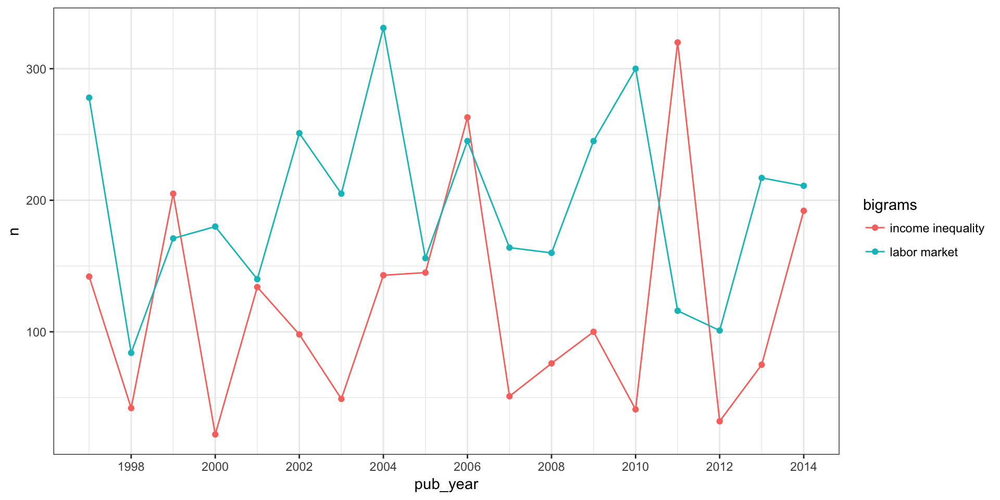

Analysing n-grams with jstor for R
Thomas Klebel
2018-02-08
The service DfR by JSTOR offers several ways for text analysis of scientific articles. In this post I will demonstrate how to analyse n-grams which DfR delivers.
Let’s suppose, we are interested in the topic of “inequality” within the discipline of sociology. Social inequality can be considered a prime subject of sociological inquiry. In order to gain some context on the subject, we might be interested to analyse frequently occurring terms.
Our analysis starts at the main page of DfR. We create a dataset by searching for “inequality” and selecting “sociology” as our subject. To trim down the number of articles, we only select articles from 1997 to 2017. After logging in/creating an account, we select unigrams and bigrams. After unzipping the archives to a convenient location, we start our analysis.
Up-front, we need to load some packages. jstor is currently not available from CRAN, but can be installed via devtools.
# install.packages("devtools")
# devtools::install_github("tklebel/jstor")
library(jstor)
library(tidyverse)
library(visdat)
# set a lighter theme for plots
theme_set(theme_bw())To import the files, we first need to locate them and generate an object with their corresponding paths. The following code assumes that you follow a workflow organised around projects within RStudio (refer to http://r4ds.had.co.nz/workflow-projects.html for further information).
# list files
meta_files <- list.files(pattern = "xml", full.names = T, recursive = T)Since we have a decent amount of articles, let’s speed up the process of importing the metadata via parallel processing. jstor_import is a nice wrapper which takes care of setting up the processes and deals with any errors that might occur along the way.
jstor_import(meta_files, out_file = "imported_metadata", .f = find_article,
files_per_batch = 25000, cores = 4)
#> Starting to import 23909 file(s).
#> Processing chunk 1/1
#> |===================================================================| 100%
#> Finished importing 23909 file(s) in 2.54 mins.Since jstor_import writes the results to disk, we need to read the metadata from the newly created file.1
imported_metadata <- read_csv("imported_metadata-1.csv", guess_max = 2000)
imported_metadata## # A tibble: 23,909 x 17
## basename_id journal_doi journal_jcode journal_pub_id article_doi
## <chr> <dbl> <chr> <chr> <chr>
## 1 journal-article-1… NA <NA> amerjsoci 10.1086/21…
## 2 journal-article-1… NA <NA> amerjsoci 10.1086/21…
## 3 journal-article-1… NA <NA> amerjsoci 10.1086/21…
## 4 journal-article-1… NA <NA> amerjsoci 10.1086/21…
## 5 journal-article-1… NA <NA> amerjsoci 10.1086/21…
## 6 journal-article-1… NA <NA> amerjsoci 10.1086/21…
## 7 journal-article-1… NA <NA> amerjsoci 10.1086/21…
## 8 journal-article-1… NA <NA> amerjsoci 10.1086/21…
## 9 journal-article-1… NA <NA> amerjsoci 10.1086/21…
## 10 journal-article-1… NA <NA> amerjsoci 10.1086/21…
## # ... with 23,899 more rows, and 12 more variables: article_pub_id <chr>,
## # article_jcode <chr>, article_type <chr>, article_title <chr>,
## # volume <chr>, issue <chr>, language <chr>, pub_day <chr>,
## # pub_month <chr>, pub_year <int>, first_page <int>, last_page <int>Exploration
Before diving into the analysis of ngrams, we might wish to take an explorative look at our metadata.
The first thing to look at are the types of articles.
ggplot(imported_metadata, aes(article_type)) +
geom_bar() +
coord_flip()
We can see, that the majority of articles are proper “research-articles”, which together with book-reviews and miscellaneous articles amount to ~99% of all articles.
imported_metadata %>%
count(article_type, sort = T) %>%
mutate(perc = scales::percent(n/sum(n)))## # A tibble: 14 x 3
## article_type n perc
## <chr> <int> <chr>
## 1 research-article 16289 68.1%
## 2 book-review 4552 19.0%
## 3 misc 2850 11.9%
## 4 other 89 0.4%
## 5 in-brief 38 0.2%
## 6 discussion 31 0.1%
## 7 review-article 25 0.1%
## 8 announcement 12 0.1%
## 9 index 9 0.0%
## 10 editorial 7 0.0%
## 11 introduction 3 0.0%
## 12 news 2 0.0%
## 13 bibliography 1 0.0%
## 14 letter 1 0.0%We must be cautious, however, when using this variable to distinguish articles into categories. In this instance, we have “research-articles” which are actually book-reviews:
imported_metadata %>%
filter(article_type == "research-article" & str_detect(article_title, "Book")) %>%
select(basename_id, article_title, pub_year)## # A tibble: 190 x 3
## basename_id article_title pub_year
## <chr> <chr> <int>
## 1 journal-article-10.1086_210272 Book Reviews 1999
## 2 journal-article-10.1086_210273 Book Reviews 1999
## 3 journal-article-10.1086_210274 Book Reviews 1999
## 4 journal-article-10.1086_210275 Book Reviews 1999
## 5 journal-article-10.1086_210276 Book Reviews 1999
## 6 journal-article-10.1086_210278 Book Reviews 1999
## 7 journal-article-10.1086_210279 Book Reviews 1999
## 8 journal-article-10.1086_210280 Book Reviews 1999
## 9 journal-article-10.1086_210281 Book Reviews 1999
## 10 journal-article-10.1086_210283 Book Reviews 1999
## # ... with 180 more rowsFor the current demonstration, we want to restrict the type of articles to research articles, therefore we need to steps to remove book reviews and other miscellaneous articles: First, filter by article_type, then remove articles where the title starts with “Book Review”.
research_articles <- imported_metadata %>%
filter(article_type == "research-article") %>%
filter(!str_detect(article_title, "^Book Review"))The moving wall - filtering articles by time
Since JSTOR has a moving wall, we could take a look at the number of articles per year in our dataset.
research_articles %>%
ggplot(aes(pub_year)) +
geom_bar() 
From this graph we can see an increase in research articles until 2010, after which the number of articles first tapers off, and then drops off sharply. For this reason we should exclude articles from 2015 onward, since the sample might get quite biased toward specific journals.
without_wall <- research_articles %>%
filter(pub_year < 2015)Flagship journals - filtering articles by journal
Since the amount of articles is still rather large for this demonstration, we could select only a few journals. Here, we will look at articles from two leading journals within the discipline, “Journal of Sociology” and “American Sociological Review”. To identify articles from those journals, we need to take a look at the columns “journal_doi”, “journal_jcode”, and “journal_pub_id”. For sociological journals in general, the most common identifier is “journal_jcode”. To demonstrate, we look at the missing proportion for each of the three variables:
without_wall %>%
select(contains("journal")) %>%
vis_miss()
This illustrates rather strikingly, that most of the time our information is in “journal_jcode”, and when it isn’t, it is in “journal_pub_id”.
There are, however, some cases, where there is information in both variables:
without_wall %>%
filter(!is.na(journal_jcode) & !is.na(journal_pub_id))## # A tibble: 33 x 17
## basename_id journal_doi journal_jcode journal_pub_id article_doi
## <chr> <dbl> <chr> <chr> <chr>
## 1 journal-article-1… NA j50018924 weatclimsoci <NA>
## 2 journal-article-1… NA j50018924 weatclimsoci <NA>
## 3 journal-article-1… NA j50018924 weatclimsoci <NA>
## 4 journal-article-1… NA j50018924 weatclimsoci <NA>
## 5 journal-article-1… NA j50018924 weatclimsoci <NA>
## 6 journal-article-1… NA j50018924 weatclimsoci <NA>
## 7 journal-article-1… NA j50019839 geneses <NA>
## 8 journal-article-1… NA j50019839 geneses <NA>
## 9 journal-article-1… NA j50019839 geneses <NA>
## 10 journal-article-1… NA j50019839 geneses <NA>
## # ... with 23 more rows, and 12 more variables: article_pub_id <chr>,
## # article_jcode <chr>, article_type <chr>, article_title <chr>,
## # volume <chr>, issue <chr>, language <chr>, pub_day <chr>,
## # pub_month <chr>, pub_year <int>, first_page <int>, last_page <int>Since for those cases, the form without digits (for example “geneses”) is similar to the usual format in “journal_jcode”, we will take the information from “journal_jcode” when it is missing in “journal_pub_id” (which is the most frequent case), and from “journal_pub_id” otherwise.
without_wall <- without_wall %>%
mutate(journal_id = case_when(is.na(journal_pub_id) ~ journal_jcode,
TRUE ~ journal_pub_id))We can check, if there are any missings left:
without_wall %>%
pull(journal_id) %>%
is.na() %>%
any()## [1] FALSEAfter cleaning up the identifier for journals, we can select our two flagship-journals.
flagship_journals <- without_wall %>%
filter(journal_id %in% c("amerjsoci", "amersocirevi"))Importing bigrams
Disclaimer: Much of the following analysis was inspired by the book “Text Mining with R” by Julia Silge and David Robinson: https://www.tidytextmining.com
For this demonstration we will look at bigrams to find the most common pairs of words. Until now, we were only dealing with the metadata, therefore we need a way to link our reduced dataset to the bigram files from DfR. The file name can serve as an identifier to the articles, since it is similar between metadata and n-grams.
First, we list all relevant files on disk.
bigram_files <- list.files(path = c("receipt-id-624621-part-001/ngram2/",
"receipt-id-624621-part-002/ngram2/"),
full.names = T)Next, we select all relevant files from our trimmed down dataset by creating a subset of the files.
# create a search pattern by simply pasting together the ids we want to keep
search_pattern <- paste(flagship_journals$basename_id, collapse = "|")
reduced_bigrams <- str_subset(bigram_files, search_pattern)Equipped with the paths to all files of interest, we import all relevant bigrams to a data.frame.
imported_bigrams <- data_frame(file_paths = reduced_bigrams) %>%
mutate(content = map(file_paths, read_tsv, col_names = c("bigrams", "n"),
col_types = list(col_character(), col_integer())),
basename_id = get_basename(file_paths),
basename_id = str_replace(basename_id, "-ngram2", "")) %>%
select(-file_paths) %>%
unnest()From the 872 articles in our two flagship journals we now have 6729813 bigrams. The bigrams are calculated by JSTOR for each article independently. In order to reduce the sample to the most common bigrams, we have two choices: either to include only terms which occur within each article a given amount of times, or to include terms which occur within all articles a given amount of times. By only including terms which occur more than 5 times in each article, we can drastically reduce the number of terms. However, we might miss some important ones: there might be terms which do not occur repeatedly within articles, but are present in all of them.
For demonstration purposes we are a bit restrictive and include only those terms, which occur at least three times per article.
top_bigrams <- imported_bigrams %>%
filter(n >= 3)Cleaning up bigrams
When constructing n-grams, DfR uses a stop-word list, which is quite narrow 2. If we would like to restrict the terms a bit further, we could use stopwords from tidytext:
library(tidytext)
bigrams_separated <- top_bigrams %>%
separate(bigrams, c("word1", "word2"), sep = " ")
bigrams_filtered <- bigrams_separated %>%
filter(!word1 %in% stop_words$word) %>%
filter(!word2 %in% stop_words$word)After removing the stopwords we need to consider the fact, that our bigrams were created for each article on its own. In order to analyse them together, we need to count the terms for all articles in combination.
bigram_counts <- bigrams_filtered %>%
group_by(word1, word2) %>%
summarise(n = sum(n)) %>%
arrange(desc(n))
bigram_counts## # A tibble: 106,706 x 3
## # Groups: word1 [18,152]
## word1 word2 n
## <chr> <chr> <int>
## 1 american sociological 9593
## 2 sociological review 9198
## 3 university press 4603
## 4 labor market 3555
## 5 american journal 3273
## 6 9 7 3270
## 7 7 6 3260
## 8 10 9 3230
## 9 amsmath amsxtra 3192
## 10 begin document 3192
## # ... with 106,696 more rowsFrom the first few terms we can see, that there are still many terms which are not very interesting for our analysis. The terms “american” and “sociological” are simply part of the title of a journal we selected (American Sociological Review). To clean the terms up, we can employ different approaches. One is to simply filter the terms we wish to exclude:
bigram_counts_clean <- bigram_counts %>%
unite(bigram, word1, word2, sep = " ") %>%
filter(!bigram %in% c("american sociological", "sociological review",
"university press", "american journal",
"journal sociology")) %>%
separate(bigram, c("word1", "word2"))We will look at another approach after plotting our bigrams.
Visualize relationships
When analyzing bigrams, we might want to look at the relationships between common terms. For this we can leverage the power of igraph and ggraph.
library(igraph)
library(ggraph)First, we only keep the most common terms and then convert our data.frame to an igraph-object. 3
bigram_graph <- bigram_counts_clean %>%
filter(n > 500) %>%
graph_from_data_frame()
bigram_graph## IGRAPH 4cc5ba6 DN-- 170 161 --
## + attr: name (v/c), n (e/n)
## + edges from 4cc5ba6 (vertex names):
## [1] labor ->market 9 ->7
## [3] 7 ->6 10 ->9
## [5] amsmath ->amsxtra begin ->document
## [7] declaremathsizes ->10 declaretextfontcommand->textcyr
## [9] documentclass ->aastex encodingdefault ->ot2
## [11] newcommand ->cyr ot1 ->fontenc
## [13] ot2 ->ot1 pagestyle ->empty
## [15] portland ->xspace
## + ... omitted several edgesFor plotting, we will use a simple plotting function, adapted from https://www.tidytextmining.com/ngrams.html#visualizing-a-network-of-bigrams-with-ggraph.
plot_bigrams <- function(igraph_df, seed = 2016) {
set.seed(seed)
a <- grid::arrow(type = "closed", length = unit(.15, "inches"))
ggraph(igraph_df, layout = "fr") +
geom_edge_link(aes(edge_alpha = n), show.legend = FALSE,
arrow = a, end_cap = circle(.07, 'inches')) +
geom_node_point(color = "lightblue", size = 4) +
geom_node_text(aes(label = name), repel = T) +
theme_graph()
}plot_bigrams(bigram_graph) Very obvious is a group of nodes which are not relevant to the topic of inequality. They come from LaTeX documents and somehow made their way into the original dataset. However, since they are more common than most of the other terms, they are quite easy to remove. We can look at the nodes/vertices of our graph with
Very obvious is a group of nodes which are not relevant to the topic of inequality. They come from LaTeX documents and somehow made their way into the original dataset. However, since they are more common than most of the other terms, they are quite easy to remove. We can look at the nodes/vertices of our graph with V(bigram_graph).
V(bigram_graph)## + 170/170 vertices, named, from 4cc5ba6:
## [1] labor 9 7
## [4] 10 amsmath begin
## [7] declaremathsizes declaretextfontcommand documentclass
## [10] encodingdefault newcommand ot1
## [13] ot2 pagestyle portland
## [16] renewcommand rmdefault sfdefault
## [19] textcyr usepackage 6
## [22] aastex amsbsy amsfonts
## [25] amssymb amsxtra bm
## [28] cyr document empty
## + ... omitted several verticesThe first node, “labor”, is relevant to us, but all other nodes from 2 to at least 40 are clearly irrelevant. We can remove them by simple subtraction:
bigram_graph_clean <- bigram_graph - 2:40
bigram_graph_clean## IGRAPH 969ed3c DN-- 131 105 --
## + attr: name (v/c), n (e/n)
## + edges from 969ed3c (vertex names):
## [1] labor ->market labor ->force 0 ->0
## [4] table ->2 1 ->1 income ->inequality
## [7] black ->white table ->1 table ->3
## [10] social ->capital model ->1 model ->2
## [13] african ->american 0 ->1 human ->capital
## [16] african ->americans table ->4 1 ->2
## [19] model ->3 racial ->ethnic individual->level
## [22] civil ->rights cross ->national
## + ... omitted several edgesAnother apparent group is a combination of “table” or “figure” with digits. This evidently comes from tables or figures in the papers and might suggest, that the articles in our sample quite frequently employ quantitative methods, where figures and tables are very common. For the analysis at hand however, we might remove them, along with a few other irrelevant terms.
bigram_graph_clean <- bigram_graph_clean - c("table", "model",
as.character(0:5),
"xd", "rh", "landscape", "00",
"figure", "review", "79",
"http", "www", "000", "01")After cleaning up a bit, we can take a fresh look at our bigrams.
plot_bigrams(bigram_graph_clean, 234)
The figure is still far from perfect (“eco” -> “nomic” should clearly be one term), but we can begin to analyse our network.
The most frequent bigrams are now “labor market”, “labor force”, and “income inequality”, which are not very surprising given that most individuals in capitalist societies need to supply their work in exchange for income. For this reason, the labor market and its stratification is a prime subject of the sociological inquiry into inequality.
A few further key dimension of sociological analysis are apparent from the graph: gender, race/ethnicity, occupational and socioeconomic status. That we find many terms to be associated with the term “social” seems quite likely given the discipline’s subject.
At least two surprising results should be pointed out. First, it is not evident how the terms “ethnic” and “racial” are connected. They do not form a typical term like “social capital”, “middle class” or similar, nor could they be considered a dichotomy like “black” and “white” which are often included in tables from regressions. Second, there is a group of nodes around the term “university”: university -> chicago, university -> california, harvard -> university, etc. At least two explanations seem plausible: either, many books are being cited which are in some way associated with those universities (“The University of Chicago Press” is the largest university press in the United States), or many researchers who publish in the two flagship-journals we selected are affiliated with those four universities: Harvard, Chicago, Cambridge and California.
Comparison over time
Besides looking at the overall relationship of bigrams, we could be interested in the development over time of specific terms. Here, we want to look at how often “labor market” and “income inequality” appear from year to year.
For this, we need to join our bigrams with the metadata.
time_bigrams <- top_bigrams %>%
left_join(flagship_journals, by = "basename_id") %>%
select(bigrams, n, pub_year)
head(time_bigrams)## bigrams n pub_year
## 1 private sector 92 1998
## 2 market transition 68 1998
## 3 3 t 38 1998
## 4 1 00 37 1998
## 5 journal sociology 34 1998
## 6 state sector 34 1998Again, we need to sum up the counts, but this time grouped by year:
time_bigrams <- time_bigrams %>%
group_by(bigrams, pub_year) %>%
summarise(n = sum(n)) %>%
arrange(desc(n))
time_bigrams## # A tibble: 248,725 x 3
## # Groups: bigrams [157,266]
## bigrams pub_year n
## <chr> <int> <int>
## 1 0 0 2004 1071
## 2 et al 2014 916
## 3 women s 2006 885
## 4 american sociological 2014 860
## 5 sociological review 2014 814
## 6 u s 2014 793
## 7 et al 2011 792
## 8 et al 2013 748
## 9 et al 2010 691
## 10 et al 2012 687
## # ... with 248,715 more rowsWe now only keep the two terms of interest and plot them in a simple chart.
# filter the terms of interest
time_comparison <- time_bigrams %>%
filter(bigrams == "labor market" | bigrams == "income inequality")
ggplot(time_comparison, aes(pub_year, n, colour = bigrams)) +
geom_point() +
geom_line() +
scale_x_continuous(breaks = scales::pretty_breaks(7))
When reading this data without
guess_max = 2000, a warning is raised because the column type was not recognized properly for one column. Increasingguess_maxhelped in this instance.↩for more information see the technical specifications on their page↩
If you are unfamiliar with graph theory, just take a look at Wikipedia: Graph Theory.↩